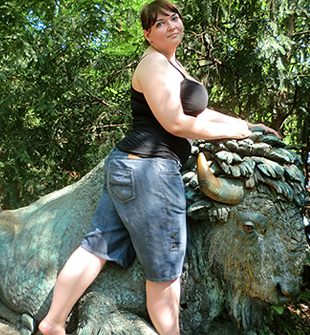
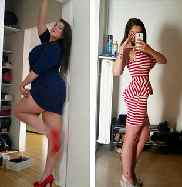

ΚΑΛΟΚΑΙΡΙΝΕΣ ΕΠΙΤΥΧΙΕΣ! Ζητήσαμε από τους εξαιρετικούς αναγνώστες μας συμβουλές για το πώς να χάσετε βάρος
Πολλοί από εμάς νιώθουμε ανασφαλείς λόγω βάρους. Ιδιαίτερα όταν πρέπει να δείξουμε το σώμα μας με καλοκαιρινά ρούχα και μαγιό. Σε κανέναν δεν αρέσουν τα πιασίματα και τα παχουλά πόδια! Άσε που κι οι άντρες έχουν μάτια μόνο για τα σέξι, αδύνατα κορίτσια.
Τώρα ήρθε η ώρα να αφήσουμε στην άκρη τους φόβους μας και την έλλειψη αυτοπεποίθησης. Όπως μια από τις γυναίκες που είπε την ιστορία της στους συνεργάτες του περιοδικού μας. Η ιστορία που μας έστειλε ήταν πράγματι συναρπαστική. Και θα είναι και κίνητρο επίσης: διαβάστε την και ευχαριστηθείτε την, κυρίες μου! Σας αξίζει να είστε αδύνατες και όμορφες!
ΠΑΝΤΡΕΨΟΥ ΜΕ ΜΕ ΠΛΟΥΤΗ ΚΑΙ ΥΓΕΙΑ
Πάντα είχα ξεκάθαρη εικόνα για το πώς έπρεπε να είναι η ζωή μου. Θα είχα ένα αδύνατο και όμορφο σώμα και έναν τρυφερό και στοργικό σύζυγο. Φυσικά, τα πράγματα δεν πήγαν ακριβώς έτσι. Ζύγιζα περίπου 63 κιλά και έχω ύψος 157 εκ. Είχα πολλά αγόρια που ποτέ δεν θέλησαν να με παντρευτούν. Αντίθετα, κάποια στιγμή, με χώριζαν για κάποια άλλη που έμοιαζε με μοντέλο.
Για λίγο καιρό, έβγαινα με έναν τύπο που φαινόταν γλυκός και τρυφερός, τον Μάρκο. Είχαμε μια ειδυλλιακή και ρομαντική σχέση και ένιωθα ότι είχα βρει την αδερφή ψυχή μου! Μέχρι εκείνη την καταραμένη μέρα δηλαδή. Με προσκάλεσε στο σπίτι των γονιών του για να τους γνωρίσω.
Μου πήρε λιγάκι να προετοιμαστώ για αυτή τη συνάντηση, μιας και ήμουν αρκετά αγχωμένη. Και πραγματικά ο πατέρας του, ο Στέφανος, μου έδωσε την εντύπωση ότι με συμπάθησε αρκετά. Έδειξε πραγματικό ενδιαφέρον για τη ζωή μου, τη δουλειά μου, την οικογένειά μου κλπ. Αλλά η μητέρα του, η Αιμιλία, δεν ήταν το ίδιο ευγενική. Με κοίταζε με απέχθεια και δεν έλεγε τίποτα.
Κάποια στιγμή πήγα στο μπάνιο. Όταν γύρισα, άκουσα την Αιμιλία να λέει στον αγαπημένο μου Μάρκο πόσο συνηθισμένη και πόσο χοντρή ήμουν και ότι δεν του ταίριαζα καθόλου. Όταν μπήκα στο δωμάτιο, ήμουν έτοιμη να βάλω τα κλάματα, αλλά ο Μάρκος δεν έδειξε καμία κατανόηση. Έφυγα γρήγορα από εκείνο το απαίσιο μέρος και δεν τον είδα ποτέ ξανά.
Είχα βαρεθεί το υπερβολικό μου βάρος και ήθελα απελπισμένα να ξεφορτωθώ τα παραπανίσια κιλά, με όποιο κόστος. Άρχισα να ψάχνω για ένα αποτελεσματικό προϊόν αδυνατίσματος.
Δεν πάω ποτέ σε γυμναστήρια γιατί δουλεύω ως διευθύντρια και είμαι πάντα βιαστική. Επιπλέον, η υγεία μου δεν είναι πάντα καλή, έτσι χρειαζόμουν μια φυσική και ασφαλή θεραπεία.
Τελικά, μπόρεσα να βρω το μόνο ασφαλές, απλό και γνωστό προϊόν στην αγορά: . Μου αρέσει ο καφές και σιχαίνομαι τα αθλήματα. Έτσι, σταμάτησα τα ανθρακούχα ποτά που λάτρευα και άρχισα να πίνω . Και μαντέψτε! Έχασα 3 κιλά σε μια βδομάδα! Μετά από δύο βδομάδες ήμουν -7 κιλά! Απλά, χωρίς να στερηθώ το καλό φαγητό.
Κοίταζα τον εαυτό μου στον καθρέπτη και δεν μπορούσα να πιστέψω αυτό το θαύμα! Δεν αναγνώριζα αυτό που έβλεπα, ίσως να ακούγομαι υπερβολική αλλά είχα ενθουσιαστεί με τον εαυτό μου. Αντί για μια χοντρή γριά, έβλεπα ένα αδύνατο κορίτσι. Νέο, ελκυστικό με λεπτό σώμα.
Τώρα το πιο ενδιαφέρον κομμάτι Σε ένα μήνα, έχασα 30 κιλά! Όταν μετρήθηκα, αποδείχτηκε ότι το αποτέλεσμα ήταν μείον 25 εκ. στους γοφούς και περίπου 20 εκ. στη μέση. Όλα αυτά χωρίς δίαιτες, νηστεία ή γυμναστική. Κορίτσια, αν το πρόβλημά σας με το βάρος είναι τοπικό, σταματήστε να χάνετε καιρό και Παραγγείλτε το . Βοήθησε εμένα και σίγουρα θα βοηθήσει κι εσάς. Κι εγώ δεν θα το πίστευα αν δεν είχε συμβεί σε εμένα.
Ένα πράγμα μόνο μετανιώνω –που έμαθα τόσο αργά γι’ αυτή τη θεραπεία και έζησα τόσα χρόνια χωρίς να νιώθω καλά με τον εαυτό μου. Κοιτάζω το σώμα μου και συνειδητοποιώ ότι επιτέλους αγαπώ και αυτό και τον εαυτό μου. Μόνο ο αρραβωνιαστικός μου, ο Στέφανος, που είναι φίλος του άντρα της αδερφής μου, με αγαπάει περισσότερο.
Σύμφωνα με την αδερφή μου, ο Στέφανος πάντα ρωτούσε για μένα αλλά δεν είχε το κουράγιο να μου ζητήσει να βγούμε. «Είναι τόσο αδύνατη, τόσο όμορφη, δεν νομίζω να ενδιαφερθεί για κάποιον σαν και μένα. Δεν έχω πολλά χρήματα και δεν είμαι και φοβερός στο κρεβάτι», μοιραζόταν τις αμφιβολίες του με την αδερφή μου. Πήρα λοιπόν την πρωτοβουλία εγώ και έβαλα τον Στέφανο να πιει . Αρχίσαμε να βγαίνουμε και ο Στέφανος άρχισε να χάνει κιλά με εκπληκτική ταχύτητα. Βδομάδα τη βδομάδα και δύο μήνες μετά ο Στέφανος έγινε ένας γοητευτικός άντρας, γεμάτος αυτοπεποίθηση. Δεν ξέρω τι είδους εραστής ήταν πριν χάσει βάρος, αλλά τώρα ο Στέφανος είναι θεός στο κρεβάτι. Ξέρετε τι εννοώ J Όλα σχετίζονται μεταξύ τους: αν έχεις έξτρα βάρος, υπάρχουν προβλήματα με την σεξουαλική ικανότητα.

Όπως ίσως μαντέψατε, ο Στέφανος μου πρότεινε να γίνω γυναίκα του μετά από δύο μήνες. Όσοι θέλουν κάτι πραγματικά, πάντα βρίσκουν τρόπο να το πετυχαίνουν! Όσοι δεν το θέλουν πραγματικά –ψάχνουν για δικαιολογίες. Είμαι τόσο χαρούμενη που όλα πάνε καλά με την ερωτική μου ζωή και για ότι συνέβη όλο αυτό με τον πρώην μου, επειδή λόγω αυτού τώρα αγαπώ και αγαπιέμαι.
Κορίτσια, σας εύχομαι καλή τύχη! Να είστε ευτυχισμένες! Μπορείτε να παραγγείλετε το στην ιστοσελίδα του κατασκευαστή και θα έρθει αμέσως στο σπίτι σας.
Το προσωπικό μας δοκίμασε αυτό το συμπλήρωμα διατροφής για χάσιμο βάρους, επίσης. Αν κι εσείς θέλετε να χάσετε βάρος εύκολα και γρήγορα, πατήστε εδώ για περισσότερες πληροφορίες
Δείτε περισσότερες πληροφορίες